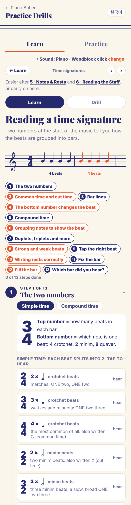
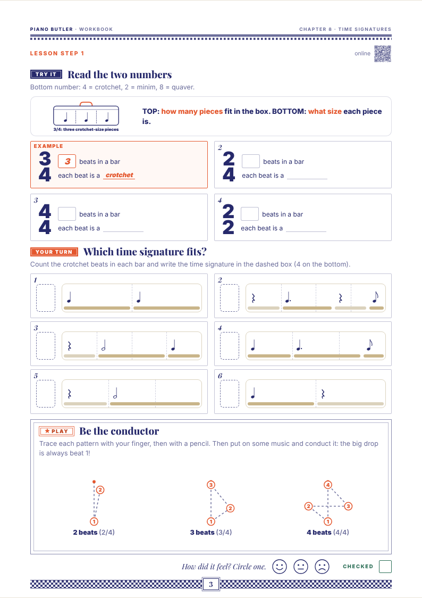
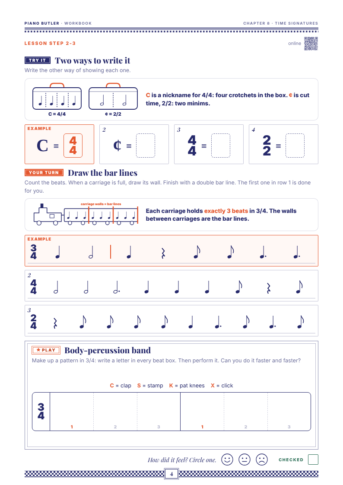

The first room of Level 2, in path order (Book rule 11). It keeps to the level plan's scope for room 8: bar lines, the double bar line and the repeat sign; 2/4, 3/4 and 4/4; strong and weak beats; filling a bar; rests on the staff; a tie across the bar line. 6/8 and cut time wait for the drill's higher levels, with Book rule 13's 2/8, 4/8, 4/2, 6/4, 9/4, 12/4 and 5/8, 7/8, 7/4.
It builds on chapter 5 (the note values and their rests, a heart for each beat, held beats lighter, a rest's beat in a dashed circle, 1 + 2 +) and chapter 6 (the treble clef, G on line 2). This is the first book that writes rhythms on the staff. Every note sits on G, line 2 of the treble clef, so reading a pitch never gets in the way (B3).
AMEB: the level plan puts 2/4, 3/4 and bar lines at Preliminary, and 4/4 and 6/8 at Grade 1.
The draft, 7 pages: 1 two bars of 4/4 (opener) · 2 Bars and bar lines, and the repeat sign · 3 The two numbers (2/4, 3/4, 4/4 and C) · 4 Strong and weak beats · 5 Fill the bar, and rests on the staff · 6 The tie · 7 My five checks.
How to answer: reply with codes, e.g. "B2 yes, B5 stamp, G3 none". Or "all as recommended". The yellow marks in the draft show the lines that wait for your answers.
When your students meet time signatures and bars, what goes wrong most often? (My guesses: counting on past the top number instead of back to 1; rushing the last beat of a bar; letting go of a tied note; playing the repeat only once.)
Anything you always say or do for bars and the strong beat (conducting, a march and a waltz, patting the 1) that the page should catch?
A tip for parents, or none, as for chapters 3 and 11?
A · what today's chapter 8 does · B · your decisions, each with my recommendation · the 7 draft pages · today's online lesson and Workbook, for comparison.
Today chapter 8 is an online lesson in thirteen steps, a drill with 5 levels, and a Workbook and Teacher copy made before the Book rules. There is no Lesson Book yet.
The online lesson, thirteen steps: the two numbers (simple and compound), common time and cut time, bar lines, the bottom number changes the beat, compound time, grouping notes, duplets and triplets, then what moved in from chapters 3 and 5: strong and weak beats, tap the right beat, writing rests correctly, fix the bar, fill the bar, which bar did you hear?
It teaches more than room 8: 6/8, 9/8 and 12/8; 2/2 and 3/2; the bottom number 8 and 2; grouping quavers; duplets and triplets.
The drill's 5 levels: what do the numbers mean; which time signature fits the bar; listen: 2, 3 or 4 beats; in 8 time, how many beats; simple or compound.
The Workbook and Teacher copy came before the Book rules: a bar as a lunch box, a chapter map, and pages on compound time and quaver counting.
Several tools still count 1 & 2 &. Your rule 12 writes it 1 + 2 +; they change when this chapter is applied.
Korean: the app calls the thin-thick end line 겹세로줄, which is two thin lines. The draft says 끝세로줄 (B7).
A separate reviewer checked every page in English and Korean. Every bar adds up to its top number; the bar lines, the double bar line and the repeat sign are right; the rests sit where they should; the counts are right (held beats lighter, rests dashed, the beat after a tie lighter). I applied these fixes from its list:
Today's extras move out: grouping quavers, duplets and triplets to Rhythm Patterns (chapter 14); compound time (6/8 and more), cut time and the bottom number to the drill's higher levels, each marked with its grade. Recyes.
Common time: page 3 shows C beside 4/4, "Its other name is common time." Or leave C for later. Recyes, now.
Rhythms on the staff, every note on G (line 2 of the treble clef), played with right hand finger 3. Or on middle C, or on a one-line rhythm staff. RecG.
4/4: strong, weak, medium, weak (big, small, middle, small hearts). Or only "beat 1 is strong". Recmedium.
The body: pat your knees on 1 and clap on the other beats, counting out loud. Or stamp on 1. Recpat.
The semibreve rest as a whole bar of silence: in this book only in 4/4. In 2/4 and 3/4 (AMEB Theory Grade 2) it waits for a higher drill level. Recyes.
Korean for the thin-thick end line: 끝세로줄, in the book and the app (today 겹세로줄). Recyes.
The repeat sign: only the end repeat (go back to the start). The facing start repeat and first and second endings come later. Recyes.
The tie only (same line or space). The slur, the sign for legato, comes with Loud & Soft (chapter 10). Recyes.
The drill, 6 levels for this room: 1 how many beats in a bar (the top number) · 2 where does the bar line go? · 3 tap the strong beat (on the click, scored like chapter 3) · 4 fill the bar (the one note or rest that fits) · 5 rests on the staff (which rest, on which line) · 6 ties: how many beats? Higher levels with their grade: 6/8 and 2/2, then rule 13's time signatures. Recyes.
Workbook (after the book), set tasks a child does alone: W1 draw the bar lines · W2 write the time signature · W3 mark the strong beats · W4 fill the bar · W5 ties: write the count, held beats in grey boxes · last page: the check-up on paper. Recall six.
On screen (the book, with what moves): tap the strong beat with the click; build a bar until it is full; hear a tie, then the same bar without it. Recyes.
The thirteen steps today start with the two numbers, simple and compound. Below: the top of the lesson on screen, and two of today's Workbook pages.


